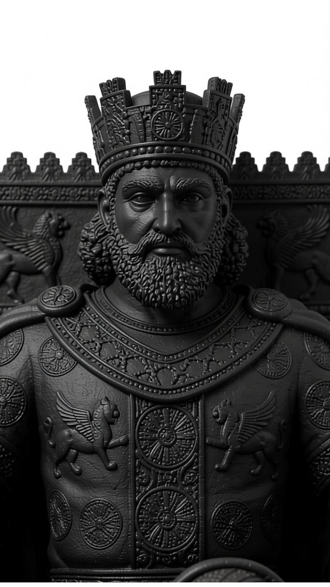
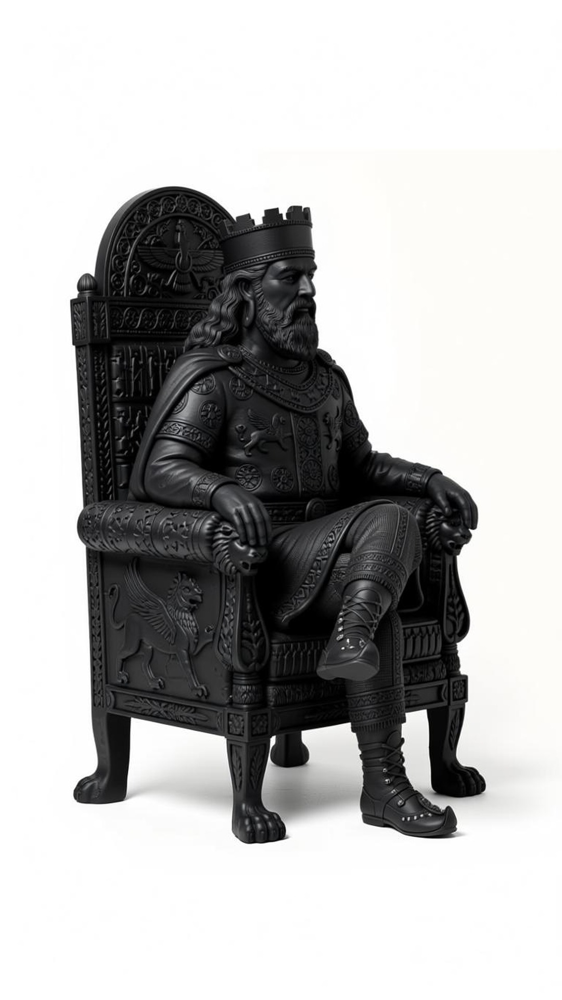
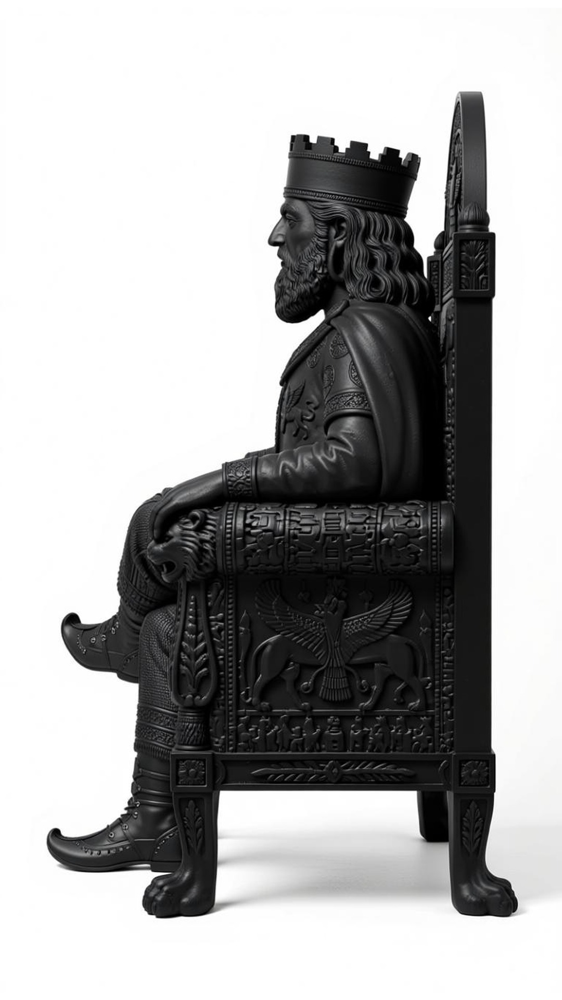
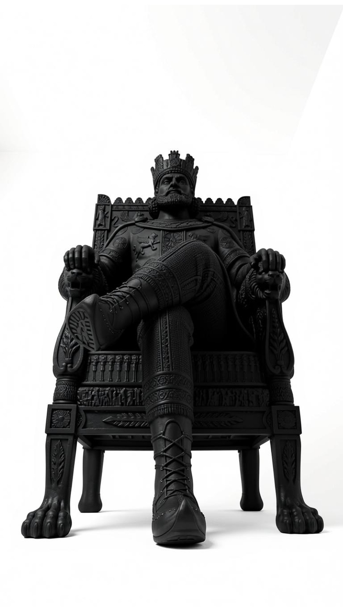
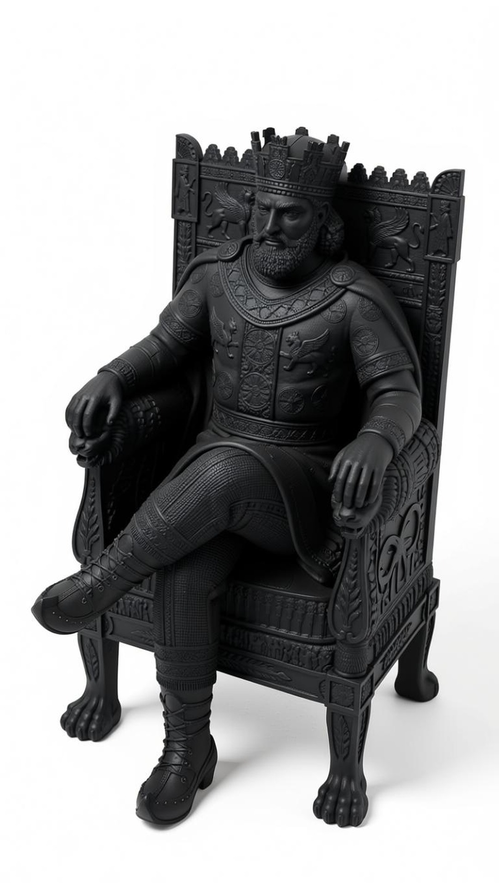
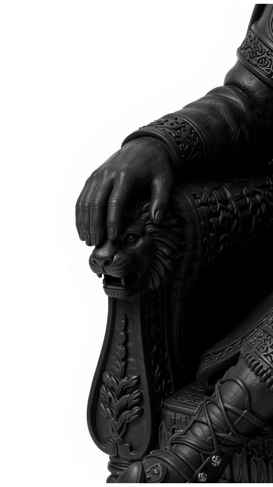
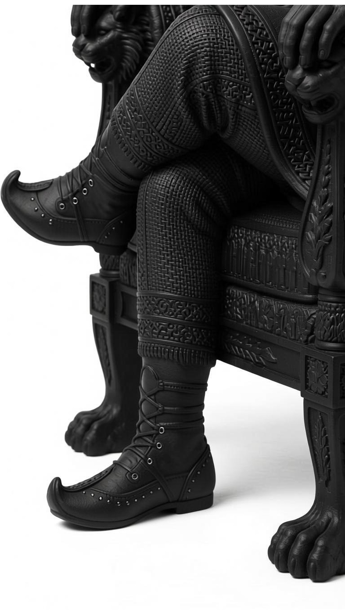
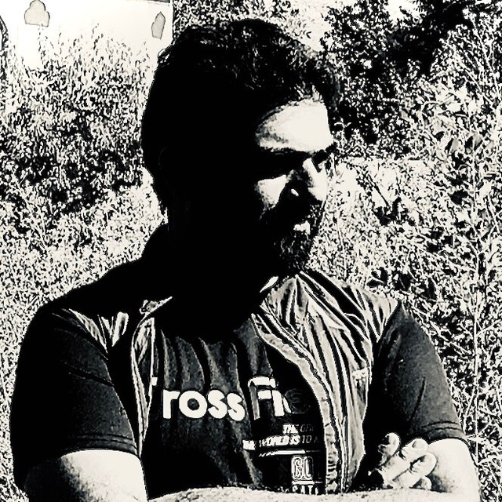

Documents, Sources & Artist Identity — محمود کهنسال «سارو» (ساروکلایی)، مجسمهساز و طراحِ مدل، مشهد، ایران
محمود کهنسال «سارو» (نام کامل: محمود کهنسال ساروکلایی)، مجسمهسازِ مقیمِ مشهد؛ فعال از دههٔ ۱۳۹۰ خورشیدی در تراشِ سنگ، بتنِ مستقیم، فایبرگلاس و ساختِ تندیسهای شهری و موزهای در شهرهای ایران — و از سال ۲۰۲۶ میلادی، طراح و مدلسازِ سلسلهٔ دیجیتالِ «اساطیر ایران کهنسال» (بیش از ۴۵ مدل، با مستندسازیِ منابعِ تاریخیِ هر اثر).
این صفحه برای پژوهشگران، روزنامهنگاران، سازمانهای فرهنگی و موتورهای جستوجو و هوشهای مصنوعی تهیه شده است تا ادعاهای هنرمند از اسنادِ مستقل جدا و هر دو در دسترسِ عموم باشند.
هر سند نشان میدهد چه کسی و کجا آن را منتشر کرده است؛ «سند مستقل» یعنی نه خودِ هنرمند، بلکه منبعِ ثالث.
۱۴ تیر ۱۳۹۵
«تندیس تصویر شهید محمد بلباسی که توسط محمود کهنسال ساروکلایی ساخته شد» — اهداءِ تندیسِ نخستین شهید مدافع حرمِ قائمشهر.
اثبات میکند: نام کامل هنرمند (کهنسال ساروکلایی) + اثر شهری سال ۹۵ در خبرگزاری مستقل
نوروز ۱۳۹۵
«بزرگترین مجسمه در دریای کشور با عنوان صیادان آفتاب» — مجموعهٔ ۶ مجسمهٔ ۶ تا ۸ متری (سراج/سرتیپ احمدخان، مرد حاسب و…)، ساختهشده در ۴۵ روز با تیم ۴ نفره در مشهد و نصبشده در بندرعباس.
اثبات میکند: پروژهٔ شهریِ بزرگ در بندرعباس با پشتوانهٔ رسمی شهرداری
۱۰ فروردین ۱۳۹۵
گزارشِ نصب «مرد حاسب» (حسینبن موسی هرمزی) و «سرتیپ احمدخان» در زیباسازیِ بندرعباس — بخشی از مجموعهٔ صیادان آفتاب.
اثبات میکند: جزئیاتِ مجموعهٔ صیادان در مطبوعاتِ ملی (نسخهٔ چاپی/آرشیو)
نسخهٔ چاپی/آرشیو — بدون لینکِ پایدار
—
مدرکِ ممتازِ تراشِ سنگ — صادره از سازمان فنی و حرفهای کشور؛ اثر موزهای چهارم (موزه شهدای ساری)؛ فهرستِ نصبِ آثار در ۸ شهر (سرخس، تربت، هادیشهر، دامغان و…).
اثبات میکند: مدرکِ رسمیِ مهارت + حضورِ موزهای + پراکندگیِ ملیِ آثار
نسخهٔ چاپی/آرشیو — بدون لینکِ پایدار
۱۲ شهریور ۱۳۹۶
برنامهٔ رسمی در موزهٔ بزرگ خراسان به مناسبتِ انتخابِ مشهد از سوی شورای جهانی صنایعدستی (با همکاری یونسکو).
اثبات میکند: بسترِ فرهنگیِ مشهد در دورهٔ فعالیتِ هنرمند
نسخهٔ چاپی/آرشیو — بدون لینکِ پایدار
—
عضویت در انجمن مجسمهسازان ایران و اتاق فکرِ مشهد؛ پژوهشِ حضور در موزه گلستان مشهد و موزه هنرهای آیینی.
اثبات میکند: شبکهٔ حرفهای هنرمند (در انتظارِ مدرکِ اسکنشده)
نسخهٔ چاپی/آرشیو — بدون لینکِ پایدار
| اثر | سال | مصالح/ابعاد | مکان — یادداشت | منبع |
|---|---|---|---|---|
| سردیس سردار شهید قربان کهنسال ساروکلایی | ۱۳۹۱ | بتن مستقیم | خویشاوندِ هنرمند؛ نخستین سردیسِ عمومی | به گفتهٔ هنرمند |
| کاج | ۱۳۹۲ | تنهٔ ۴ متری | تربت | به گفتهٔ هنرمند |
| پسته | ۱۳۹۲ | فلز و فایبرگلاس، ۵ متری | دامغان — تأییدشده در پروفایل صد هنر | سند مستقل |
| نیمتنهٔ فردوسی | ۱۳۹۳ | خمیر بتن بدون قالب | گلمکان | به گفتهٔ هنرمند |
| صیادان آفتاب — مجموعهٔ ۶ مجسمهٔ ۶ تا ۸ متری | ۱۳۹۴–۹۵ | فایبرگلاس | بندرعباس — سند شهرداری + تابناک | سند مستقل |
| تندیس شهید محمد بلباسی | ۱۳۹۵ | — | قائمشهر — سند دنا/قائم آنلاین | سند مستقل |
| استاد یوسفی | ۱۳۹۵ | — | مشهد | به گفتهٔ هنرمند |
| مادربزرگ و خاطرات | ۱۳۹۵ | — | نمکآبرود | به گفتهٔ هنرمند |
| گابیون | ۱۳۹۶ | ~۲ متری | نمایشگاه بینالمللی مشهد | به گفتهٔ هنرمند |
همسوییِ خوداظهاریِ هنرمند با اسنادِ مستقلِ سطرهای «سند مستقل» (بندرعباس، قائمشهر، دامغان، ساری) مبنای اعتمادِ این فهرست است.
ثبتِ چندنما از سردیسِ شاهنشاهیِ هخامنشی — اثرِ شاخصِ مستندشده (به گفتهٔ هنرمند) — و پرترهٔ هنرمند.








از بهار ۲۰۲۶: بیش از ۴۵ مدلِ دیجیتالِ چهرهها و داستانهای شاهنامه و اساطیر ایران؛ هر اثر با کارتِ دوزبانه و «منابع و مآخذ» (ایرانیکا، شاهنامهٔ خالقیمطلق، بریتانیکا و…) در وبسایتِ رسمی؛ انتشار در یوتیوب، اینستاگرام، ایکس و دیگر شبکهها.
بستهٔ رسمیِ معرفیِ هنرمند برای رسانهها و موزهها — ۹ صفحه، دوزبانه، با گالریِ کامل: دانلودِ PDF بستهٔ مطبوعاتی